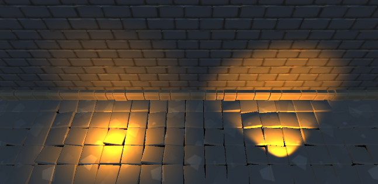
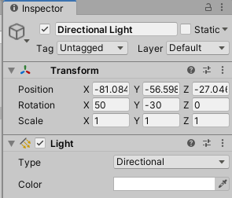

5 Setting Up a Scene¶
In the previous section, you discovered the basics of GameObjects and prefabs. You also took the first steps toward creating your own components by using scripting in Unity. That will come in handy in the following chapters as you explore how to use scriptable objects to create a dialogue system.
In this chapter, you’re going to take a closer look at how to set up a scene to make it look appealing.
Just like in a movie set, a scene in Unity needs a camera and lights, so that’s what you’ll focus on. You’re also going to learn more about shadows and the different types of lighting modes. This will mark the start of a game that takes the player to a dining hall populated with vegetable gladiators preparing for the next battle.
Getting started¶
First, open the starter project for this chapter in Unity and take a look at the Project view. Just like in the previous two chapters, the assets are neatly grouped by their uses in the RW folder.
This time around, there are a few more folders to cover. Here’s a brief overview:
- Animation: This folder contains the animations and controllers for the vegetable warriors and a treasure chest.
- Fonts: The main font used for all user interfaces is in here.
- Materials: The folder containing all the material files that hold the data for what a 3D model should look like.
- Models: All 3D models live in here.
- Music: This contains two sweet soundtracks by Kevin MacLeod.
- Prefabs: This folder holds all the prefabs, organized per category.
- Scenes: There’s only one scene asset in here for now — DiningHall.
- Scripts: A few scripts that include a simple interaction system for later use and a script that makes an image blink on and off.
- Sounds: There are two sound effects in here that will be used for the treasure chest.
- Sprites: This folder has a single image in it that will act as a cursor in menus.
- Textures: A folder containing image files that are used as the textures for the 3D models.
Open the DiningHall scene if it isn’t opened yet, and take a look around in the Scene view. It might be hard to tell because it’s quite dark, but there’s a single medieval-looking room with stone walls and wooden tables and benches.
You’ll turn this into a lively dining hall throughout this chapter, even though it might look more like scenery out of Dark Souls at the moment.
Finally, take a look at the Hierarchy to see what GameObjects are present.
There are three GameObjects at the root of the Hierarchy:
- Props: The term props comes from the film industry and means movable items like hats, knives, carpets, barrels, crates and so on. In the DiningHall scene, these are objects like the food on the dishes and the torches. This GameObject acts like a folder, so expand it fully to see all of its children.
- Scenery: This is another folder GameObject with a lot of children and grandchildren. These are GameObjects that won’t move like walls, pillars and stairs.
- Music: This GameObject has an Audio Source attached that loops a soundtrack.
With the project tour out of the way, it’s time to get cracking. Lights, camera, action!
Camera¶
Every new scene you create starts with a single camera and a directional light — but what do these GameObjects do, exactly? To illustrate why you need these objects, the DiningHallscene doesn’t start with either of these. If you take a look at the Game view, you’ll notice there’s just a black background and a text saying “Display 1 No cameras rendering”.
Try playing the scene by clicking the Play button at the top of the editor. The game actually runs fine in the background as you can see in the Scene view. The fire particles are emerging from the torches and fire pits.
Adding a camera¶
Do you hear that? Listen carefully… the sound of total silence. There should be a merry soundtrack playing in the background as the Music GameObject has a looping Audio Sourceattached to it. What gives? Well, you can’t hear anything if you don’t have ears, and it’s the same in a Unity scene. There might not be an ears component, but there sure is an Audio Listener available to listen to audio sources. This can be found on a camera.
Go ahead and add a camera to the root of the Hierarchy by clicking the + button at the top left of the Hierarchy and selecting Camera.
Rename this camera to Main Camera and set its tag to MainCamera via the Tag drop-down in the Inspector.
This tag tells Unity this is your primary camera, and it allows you to easily find it again via scripting. Unity caches all cameras tagged with MainCamera when the game starts, allowing you to call Camera.main to get access to the camera. Pretty nifty!
Now, take a look at the Inspector with Main Camera still selected and reset the Transformcomponent by right-clicking it and selecting Reset. This will position the camera at (X:0, Y:0, Z:0). The camera is now lodged into the floor.
Next, look at the bottom of the component list. You’ll see the Audio Listener component is sitting there, ready to hear some sweet tunes. Play the scene again and you’ll hear nice music playing with some medieval feast vibes!
Setting up the camera¶
To give Main Camera a better view of the scene, adjust its Transform’s position and rotation to (X:26, Y:5, Z:4) and (X:25, Y:-90, Z:0) respectively.
Time to dive a bit deeper into what makes a camera tick!
In the context of Unity, a camera is a complex component that generates a list of models visible to it and then iterates that list from far to near models. Every model is drawn to a buffer, a canvas of sorts, which is then displayed as a 2D image since your display can only show two dimensions in the physical world.
Each one of these images is a frame — a snapshot of what everything looks like at a certain moment in time. In that regard, cameras in game engines are similar to those used on movie sets and the one that’s attached to your smartphone — making pictures in quick succession to create a video. While the movie industry has settled on 24 frames per second (FPS) for movies, video games demand 30 FPS at a bare minimum for smooth motion, and 60-120 FPS is currently the gold standard, depending on the game.
As you can imagine, having only 1/60th of a second (that’s only 16 milliseconds!) to render isn’t a lot of time to render all the models and do the complex calculations you’d expect from a modern game. For this reason, you want to strike a balance between attractive visuals and good performance so you don’t drop any frames.
Now take a closer look at the Camera component, which has an impressive list of properties.
Most of these can be left at their default values for this game, but here’s an overview of the most commonly used properties:
- Clear Flags: What to draw in empty areas of the camera, where there are no models to cover up the void? There are a few options:
- Skybox: This is the default option. A skybox with a blue sky and gray ground gets rendered all around the camera. You can add a custom skybox by adding a Skyboxcomponent to a camera.
- Solid Color: Display a solid color, chosen in the Background property.
- Depth Only: This is intended to be used on a second camera and is the most advanced option. Models will be drawn by Unity above everything else, regardless if they’re overlapping or obscured by other geometry. For example, in most first-person shooters, the weapon the player is carrying around is always visible and won’t clip in walls because it’s rendered using a second camera with the clear flag set to depth only.
- Don’t Clear: Don’t clear empty areas, and keep whatever was drawn to the view on the previous frame. You can use this for some trippy effects to “smudge” models all over the screen.
- Background: The color of the background. Use this when the Clear Flags property is set to Solid Color.
- Culling Mask: This is a Layer filter. Anything that isn’t selected in the culling mask won’t be drawn by this camera.
- Projection: The projection can be set to either Perspective or Orthographic. The former is how we perceive reality around us, with objects closer to us appearing bigger and objects that are farther away looking smaller. This is the default setting, and that’s why the cups and plates closer to the camera look bigger than the ones on the tables near the banners. The orthographic projection displays objects as if they were all at the same distance. This is the same projection of classic isometric games like Diablo, Fallout 2 and Age of Empires used for their sprites.
To illustrate, here’s how the dining hall looks with orthographic projection set up to be isometric:
- Field of View: The camera’s view angle. The higher the value, the wider the view.
You can get more info about the other properties by hovering your cursor over the property you want to know more about. Of course, you can also open the reference page for the Camera component by clicking the question mark at the top right of the component.
For the dining hall, set the Main Camera’s Clear Flags to Solid Color and set the Backgroundto pure black using the color wheel. You might be wondering why to bother with the background color since the models seem to cover the whole view. There are actually small gaps between some of the floor tiles that can show the background through them. You can see this clearly by temporarily changing the background color to something bright like white or magenta.
Be sure to change the background color back to black afterwards.
Lighting a scene¶
Until now, the scene has been quite dark except for the light coming from the fire pits. To fix that, you’ll add some lights to make the room more appropriate to use as a dining hall instead of a moody dungeon.
Types of lights¶
Unity comes with four types of light for you to use. Here’s a quick primer:
- Point light: A point light shines its light evenly in all directions from a single point. You can think of this type of light as a light bulb or a sphere of light, with objects closer to it appearing brighter while objects further away appearing darker.
- Spot light: This behaves exactly like the real life spotlight you can find in a flashlight or a street lamp. Light emits from a single point in a direction in the shape of a cone.
- Directional light: A directional light is arguably the most important one, as it acts like the sun and lights up the whole scene. It’s a point that’s infinitely far away and shines its light in a certain direction. Since the position of the light isn’t used for calculations, the brightness of this light is constant, meaning it doesn’t matter whether objects are close to it or farther away.
- Area light: An area light casts light rays from within a rectangle towards a position. This could be compared to a window or a softbox studio light (a light with a screen in front of it to diffuse the light). This type of light cannot be used in real time, but has to be baked by the game developer. More on that later.
The illustration below shows the difference between the behavior of a point light, a spotlight, a directional light and an area light:

Note how the light for the directional light is constant and infinite, while the intensity of the others depends on the distance from the light source.
Point lights are often used for lighting up a small area of a scene or for showing magical auras and for adding light to particle effects. Spot lights are used for putting focus on a single object or small part of a scene and are ideal for use as flashlights in horror games. Below is a direct comparison of a point light and a spot light in Unity.

In this case, the point light is hovering right above the floor. The spot light is at a similar height and is pointed at the wall. Now that you know all about the different types of light, it’s time to work on the dining hall!
Adding lights¶
To start, add a new empty GameObject named Lights to the root of the Hierarchy and reset its Transform component. Next, add a Directional Light GameObject by clicking the + button at the top left and selecting Light ▸ Directional Light.
Drag the Directional Light on top of Lights to set it as its child. Lights will act as a folder for the different lights you’ll add to the scene.
With some light added, the scene looks very different already! Now, take a look in the Inspector of the Directional Light you added. As you can see, it’s a GameObject with a single Light component added to it.

Directional lights¶
This Light component is shared between all types of light. The only difference is the Typeproperty. This is how you can change a light to be of the type you need — in this case Directional.
A directional light behaves as if it’s infinitely far away, so its position doesn’t actually matter. You can try this out by moving Directional Light around in the scene view. It won’t change the way the light behaves. Now try rotating the light and watch what happens. You’ll notice this does have a big impact on how the scene looks as the light changes the mood.
Before moving on to other types of light, it’s time to set up the directional light to set the mood for the scene. For starters, move Directional Light to (X:0, Y:3, Z:0) to have it in a convenient location right above the stairs. Now, set its rotation to (X:75, Y:-85, Z:0).
It will make the light shine from above with a slight angle toward the big door at the far back.
The light is currently set to pure white, which makes everything look a little boring. To change that, click on the Color property and set the light color to (R:206, G:239, B:255). This is a nice light blue color. It makes the scene feel a bit colder, but it will improve the contrast with the nice orange lighting you’ll add later. The Color property can have a huge impact on the general mood of a scene. For example, making it a green color will make the scene feel as if there’s poison hanging in the air. Making it dark blue will make it feel as if it’s nighttime. You should always play around with the lighting to get a feel for what moods fit your game best.
Light modes¶
Next up is the light Mode, which can be set to Realtime, Mixed or Baked. In this scene, all lights will be realtime — which means the lighting and shadows will be recalculated every frame by the game engine. While this may be more heavy on the CPU, it allows objects to move and animate freely while their shadows and lighting look correct at all times.
While realtime lighting shouldn’t be a problem for this scene as it’s not too heavy graphics-wise, for more complicated scenes you might need the Baked or Mixed mode. The Bakedlighting mode “bakes” the lighting and shadows from the light into textures that get applied to the models. This is a process that happens at design time. It’s up to the game developer to bake out all the lighting ahead of time so the textures are included with the final game. This saves a ton of CPU cycles and moves the performance hit to a single load on the RAM and storage as the texture gets loaded in. Another benefit is that the baked shadows and lighting can include high-quality shadows and even light bounces for beautiful effects. So why not use baked lighting for everything?
There’s a huge caveat to baked lighting, and that’s that it only works correctly for non-moving objects like scenery and static props. Because the lighting and shadows are baked in, they can’t be altered at run time. Take the little scene below for example:
Looks pretty good, right? Light in the scene is even disabled, but that doesn’t matter because all light and shadow data are preserved in the textures. Move the barrels a bit to the right because that will make things look nicer, and notice what happens.
The shadows stay put even when the object was moved! To fix this, you’d have to re-bake the whole scene again. In this case, that will only take about 10 seconds when using GPU baking, but the bigger the scene and the more lights you add, the longer this will take. Baking can easily take a few hours for complex scenes, and even the dining hall scene will take a few minutes of baking on a beefy GPU. For this reason, it’s best to use the realtime lighting mode until you’re sure what objects will never move.
Finally, there’s the Mixed mode, which combines realtime and baked lighting. The way the lighting modes are mixed can be set up with different modes of their own, like the Subtractivemode always uses the baked data except for dynamic objects.
Below is an example of a baked scene with mixed lighting.
The shadows cast by the barrels are baked in, while the potato warrior casts its own realtime shadows. The performance of the mixed mode lies somewhere in between baked and realtime lighting, depending on how many dynamic GameObjects are visible in the scene.
Light intensity and shadows¶
Next up in the list of Light component properties is the Intensity and Indirect Multiplier. The intensity of the light can be set with the Intensity property. The higher the value, the brighter the light will be. The default value of 1 is fine for this scene, but you might want to tone it down for night scenes or up the value a bit for extremely bright scenes. Increasing this value too much will make the scene look washed out, so be careful not to overdo it.
The indirect (light) multiplier is used when baking lightmaps. As light rays bounce around the scene, it takes the color of the objects it collides with along with it. This effect can also be observed in real life. If you take a bright red object, put it near a white wall and shine a bright light on it. You’ll see the color red will bleed onto the wall. You may even see this effect happening around you right now if you have any colored objects standing or hanging near a white wall or a desk. The Indirect Multiplier strengthens that effect in Unity.
Now for the big one — shadows! The Shadow Type property has three options: No Shadows, Hard Shadows and Soft Shadows. By default, a light casts no shadows because the calculations of shadows are one of the most expensive operations when it comes to lighting. For directional lights, the performance hit is minimal, as Unity only has to calculate the shadows for one direction.
However, point lights like those used for the fire pits are six times more expensive as they cast shadows in every direction. It’s for this reason the fire pits have their shadows disabled.
Both hard and soft shadows cast shadows in the scene. All models will cast shadows onto other objects and themselves, resulting in realistic results. Shadows are processed and written to a shadow map that’s applied over the existing textures. Soft shadows add an extra step to average the shadow map pixels with a shader, resulting in a smooth result at the cost of some extra GPU processing.
Select Soft Shadows in the Shadow Type drop-down, and you’ll immediately see the results in both the Scene and Game view.
The shadows are especially prominent below the benches and in the stone door frames. Some shadows add a lot to the scene in terms of contrast and mood.
If you look back at the Inspector, you’ll notice more properties appeared for the shadow settings labeled Realtime Shadows.

These properties let you specify the details of the shadows.
For starters, tone down the Strength to 0.5 to make the shadows less harsh, as it decreases the opacity that results in a softer look.
The Resolution sets the size of the shadow map, with bigger values resulting in crisp shadows and lower values making the shadows fuzzy. Of course, higher resolutions will require more processing power by the GPU and will eat up more memory. The default value is Use Quality Settings, which uses the values found in the Quality tab of the Project Settings, with the default set to High Resolution.
Note: A whole book could easily be dedicated just to setting up a project for maximum fidelity or performance, but for the sake of simplicity, this book skips the setup of the project settings as the defaults are a good compromise between performance and visuals. If you’re curious, you can take a look at the Quality tab in the Project Settings by selecting Edit ▸ Project Settings… in the top menu and clicking on Quality on the left side.
You can play around with this setting to get a feel for the difference. Below is a comparison between Low Resolution and Very High Resolution to show the huge impact of this single setting.
Next up are Bias and Normal Bias. These properties are here to solve two common shadow problems: shadow acne and light bleeding. Shadow acne occurs when an object is incorrectly shadowed by itself because the calculation of the distance between the light and the shadow caster on the shadow map is off by a pixel or two. You don’t have to remember the cause, but it’s important to recognize when it’s happening and how to fix it by using the bias.
There’s a little bit of shadow bias by default to prevent shadow acne. If you set Bias to 0, shadow acne will appear on some objects in the scene. You can tell by the subtle dark wavy pattern on some of the objects and by some objects becoming just a bit darker overall. It’s especially clear on the plates at the lower right corner and on some of the floor tiles in the middle. Below is a zoomed-in view to make the acne more visible, with the bias turned all the way down on the right side.
It might be hard to tell, but there’s a wavy pattern on the tile that shouldn’t be there. If you ever see this with your own shadows, slightly increase the bias in increments of 0.01 until the issue disappears. Increasing the bias too much will make the shadows move too far away from the objects, so it’s a subtle balance that requires a bit of tweaking.
The Normal Bias fixes light bleeding, an effect where light bleeds through objects that should be solid. The default value of 0.4 slightly shrinks the normals of each model used for shadow casting. In other words, the higher you set the normal bias, the thinner the shadow will be in most cases. For some models, this default shrinkage can cause light to spread between the “cracks” and seep out — causing holes in the shadow.
For example, take a look at this barrel scene again with the normal bias set to 0.4:
Notice how the shadows have holes in them while you’d expect these barrels to be solid without any gaps. The fix in this case is dropping the normal bias down to 0 as no other artifacts appear when doing so:
The takeaway from all of this is to look closely at your shadows and play with the bias values until you’re satisfied with the results.
Finally, the Near Plane is the minimal distance from the light source from where shadows will start to be drawn. For directional lights, this setting won’t do anything because the light’s distance is infinite. The directional light is ready, and you know a lot more about lights now! Next up are the point lights for the torches.
Point lights¶
If you play the scene, you’ll notice there are a bunch of torches hanging against the walls of the dining room. These have fiery particles, but they don’t emit any light yet.
Each of these torches will need to have a point light near them to give the illusion that they’re providing light to the scene. To start off, add a Point Light to the root of the scene by clicking the + icon at the top left of the Hierarchy and selecting Light ▸ Point Light.
Now, drag this new Point Light GameObject onto Lights to make it a child of Lights.
Next, position the light to the torch left of the big door at the back of the scene by setting its position to (X:-9.2, Y:4, Z:-2.2). This will move the point light right in front of the torch.
At the moment, the light emitted by the point light is a weak white glow. This might be suitable for a small white LED, but this is a flame! The light needs to be powerful and somewhere on the orange spectrum of color. To achieve this, edit the following properties of Point Light in the Inspector:
- Range: 20
- Color: (R:255, G:188, B:129)
- Intensity: 1.5
- Indirect Multiplier: 0 (point lights don’t support this in realtime)
That’s a lot better! The light now glows brightly and illuminates the door and the platform on the left.

Now, duplicate the point light by selecting it in the Hierarchy and pressing Control-D or Command-D. This will add a copy named Point Light (1) below the existing point light. Select the new copy and move it to the other torch next to the door by using the Move tool in the Scene view.
Keep duplicating and moving the point lights until there’s a point light next to each torch. Don’t worry about the exact position. As long as every light is near a torch, it’ll look good!
The end result should look similar to the image below when running the scene.
With that, all of the lights are in place — making the dining hall feel a lot more cozy! All that’s missing are some people to dine on the delicious food.
Adding characters¶
The characters in this scene will be veggie gladiators — fierce warriors that fight daily in the arena. They are getting themselves ready by munching on the fine food and drinks provided. The character the player will control is known as an avatar, a graphical representation of the player in the virtual world. The avatar in this game is a veggie gladiator himself that will be able to interact with the world around him in later chapters. For now, he will be a character that’s just standing around.
The player avatar and the others have been prepared beforehand and saved as prefabs.
To add the avatar, drag Player Avatar from the RW / Prefabs / Avatar folder to the root of the Hierarchy.
The player avatar is a potato warrior that has an animation controller attached to it on its child Model. By default, he’s in a T-pose, which means he’s standing upright, with his “arms” spread out. If you play the scene, you can see that he starts doing his idle animation. Now for the other characters. Create a new empty GameObject named Interactable in the root of the Hierarchy. Next, reset its Transform.
Finally, add an empty GameObject as a child of Interactable by right-clicking Interactable and selecting Create Empty.
Name this new child GameObject NPCs. This “folder” structure will make it easier to keep the non-playable characters neatly organized together. The characters are prefabs living in the RW / Prefabs / Characters folder. Every character has three versions: a regular version wielding a weapon and two alternative versions named Alt 1 and Alt 2 that have color variations and have their hands empty.
For the sake of adding the characters, it may be easier to scale the icons down in the Project view until you can see their full names without any thumbnails. You can do this by sliding the slider at the bottom right all the way to the left.
To add the characters to the scene, drag each character to the NPCs GameObject in the Hierarchy and set their position and rotation. The first one will be a guard standing in front of the left stairway. Drag Warrior_Potato from the Prefabs folder onto NPCs and name it Guard 1. Set its position and rotation to (X:3, Y:0.2, Z:-9.4) and (X:0, Y:0, Z:0), respectively.
The guard should now be standing near the stairway on the left.
Repeat the same steps, but this time use the Warrior_Carrot prefab. Name this NPC Guard 2and set its position and rotation to (X:2.5, Y:0.2, Z:12.7) and (X:0, Y:180, Z:0), respectively. This will position the carrot warrior at the other stairway on the right, facing the first guard.
For the next warriors, place them like so:
Note: You can skip this step if you want, because the starter project of the next chapter has these NPCs already placed for you.
- A Warrior_Pepper named Boss at position (X:-12.65, Y:1, Z:2.12) and rotation (X:0, Y:90, Z:0).
- A Warrior_Pepper Alt 1 named Pepper Warrior at position (X:11.15, Y:0, Z:-5.5) and rotation (X:0, Y:0, Z:0).
- A Warrior Carrot named Carrot Warrior at position (X:10, Y:0, Z:-3.2) and rotation (X:0, Y:185, Z:0).
- A Warrior_Potato named Potato Warrior at position (X:15.5, Y:0, Z:0) and rotation (X:0, Y:180, Z:0).
- A Warrior_Carrot named Carrot Warrior at position (X:11, Y:0, Z:6.4) and rotation (X:0, Y:0, Z:0).
- A Warrior_Pepper named Pepper Warrior at position (X:20, Y:0, Z:9) and rotation (X:0, Y:180, Z:0).
With all these characters added, run the scene and you’ll notice all of them will be in their idle animations. The dining hall is a lot more lively now. :]
That concludes this chapter! In the next chapter, you’ll learn all about Unity’s input system and how to set up collisions. This will allow you to make the player avatar walk around in the dining hall.
Key points¶
- You need a Camera component to render the scene to the Game view. To hear sounds, you need an Audio Listener component.
- A camera generates frames. These are like pictures that are taken at a swift rate. The framerate is the amount of these frames that can be generated per second.
- The target framerate is often 60 to 120 frames per second (FPS). This is only 16 to 8 milliseconds per frame!
- Lights allow you to see models in the scene, and they can create shadows to improve the contrast and realism.
- Point lights shine light evenly like a sphere of light.
- Spot lights emit light from a single point in a cone shape.
- Directional lights are like the sun — they shine from infinitely far away in a direction.
- The Realtime lighting mode allows you to move objects in real time and the shadows will move with them. This is heavier on the CPU.
- Baked lighting mode bakes the shadows and lights in the scene, which takes a long time. After moving objects, you need to bake again. Baked lighting is easy on the CPU.
- The Mixed lighting mode combines realtime and baked lighting. The performance lies between realtime and baked.
- Shadows add a lot to a scene and can be either hard or soft. The latter is a bit more expensive on the GPU.
- Play around with the shadow Strength and Resolution properties to fit your game and target device.
- Use the shadow Bias and Normal Bias to fix common rendering issues.
- An avatar is a graphical representation of a player in a game.